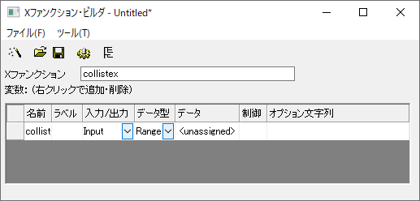

#include <..\OriginLab\wks_utils.h> // init_GetN_col_list_ctrls関数に必要
string str; if(collist) collist.GetRangeString(str, NTYPE_FOR_RANGE); out_str(str);
bool bIsStart = is_xf_startup(nGetNDialog, dwCntrl); if(bIsStart && (dwCntrl & LTXF_SHOW_DIALOG)) { init_GetN_col_list_ctrls(NULL, trGetN.collist); }
Xファンクションを実行
- スクリプトウィンドウでcollistex -dを実行すると、以下のダイアログが表示されます。
- ListBoxの三角形ボタンをクリックして列を追加でき、列を選択/選択解除できます。
- OKをクリックします。選択した列の範囲を出力します。